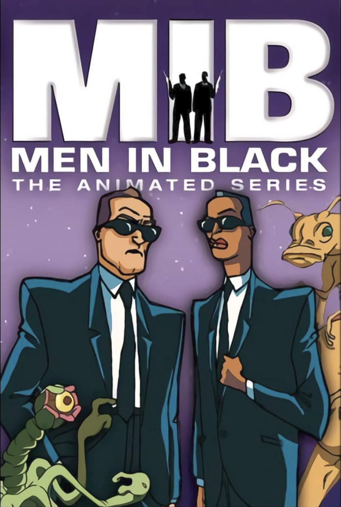

Producción de Hombres de Negro I
Producción, Estudio y Grabación
La película fue producida por Walter F. Parkes y Laurie MacDonald, quienes también trabajaron en otros proyectos exitosos de Hollywood.
La producción se llevó a cabo en los estudios de Sony Pictures en Culver City, California, y contó con un presupuesto estimado de 90 millones de dólares.
La música estuvo a cargo de Danny Elfman, mientras que Will Smith interpretó el exitoso tema Men in Black, que se convirtió en un fenómeno mundial.
Una combinación de ciencia ficción, acción y comedia, Men in Black fue un enorme éxito de taquilla y dio origen a una de las franquicias más populares de finales de los años noventa.
Hombres de Negro Serie animada

Las continuas aventuras de los agentes K y J mientras relatan problemas con extraterrestres en la ciudad de Nueva York.
La serie animada posee cuatro temporadas que, incluyen 13 episodios cada una.
Creadores: Duane Capizzi, Jeff Kline, Richard Raynis
Serie de TV
Año: 1997-2001